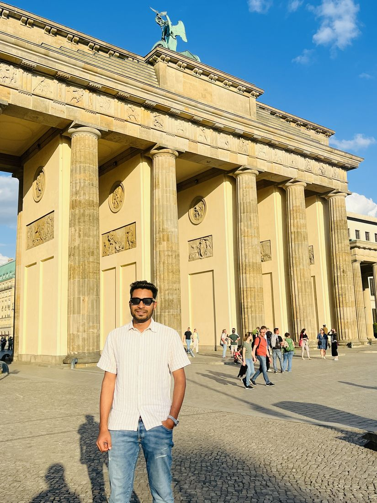
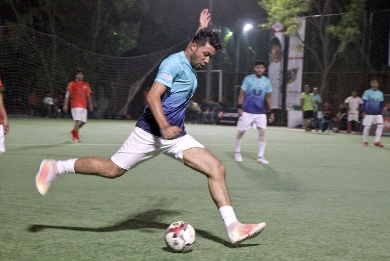
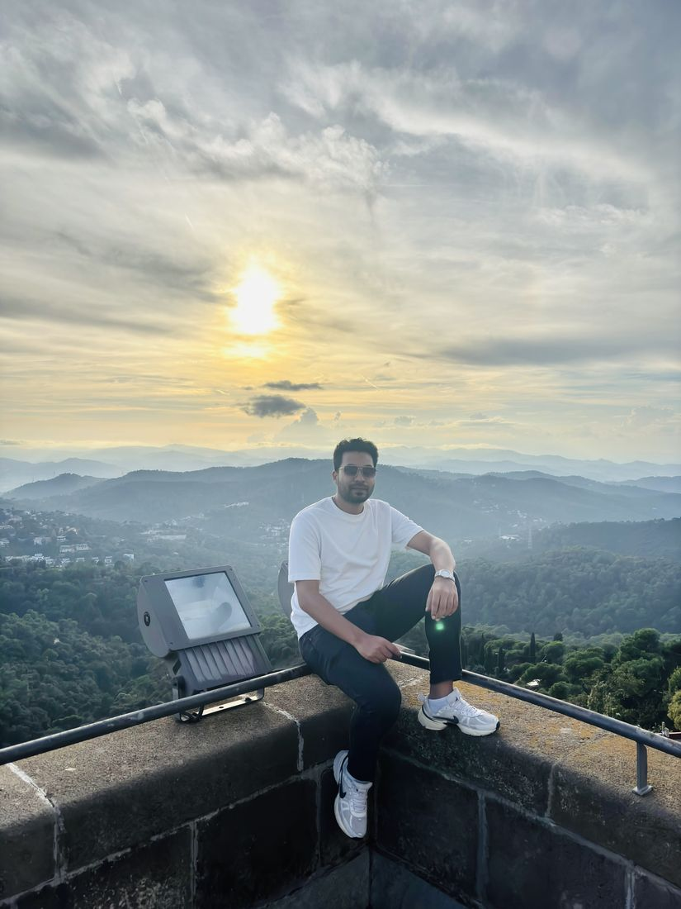

School & Higher Secondary (Science)
Thakurgaon Sugar Mills High School · Thakurgaon Government College. SSC GPA 5.00/5.00.
Data Scientist · Berlin
I build data products people actually use: research data platforms for scientists, LLM pipelines that answer fast, and recommenders that explain themselves.
Hi, I'm Sina. I grew up in Bangladesh, wrote ERP software in Dhaka, did machine learning research at university, and moved to Berlin to study data science.
Today I'm doing my MSc in Data Science at Berliner Hochschule für Technik and work as a working student at the Paul-Drude-Institut, where I run the institute's research data platform.
I like problems that sit between models and real users: making a recommender explain itself, getting an LLM pipeline to answer fast, or helping scientists actually find their own data. I care about the whole play, from raw data to the person using the result.
Now Reproducing LoRA for Advanced ML, and looking for a working-student role or thesis topic in ML / LLMs.
Thakurgaon Sugar Mills High School · Thakurgaon Government College. SSC GPA 5.00/5.00.
United International University. CGPA 3.77/4.00, tuition scholarship (50–100% waiver). Thesis: Bengali conversational question answering.
Promoted from Junior Software Engineer in 2024. Built data visualization dashboards and analyzed business data across full-cycle ERP modules: production, sales, inventory, finance, SCM, HR & payroll.
Machine learning and computer vision research, including real-time vehicle detection on Bangladeshi roads.
Berliner Hochschule für Technik. Recommender systems, deep learning, LLMs.
Research data management: running the institute's NOMAD Oasis, extending its plugin, and contributing upstream to FAIRmat.
Featured · MSc project · Recommender system
"Find me a striker like Haaland under €80M."
A natural-language recommender for football scouting. Describe the profile you need in plain words; it retrieves matching players, explains why they match, and compares them on radar charts.
LLM systems
System 1 routes, System 2 answers. A small, fast decision model scores each task with probabilities and routes it to specialist LLMs on the GWDG supercomputer, escalating hard cases to a 675B model.
Work · PDI Berlin
I maintain the institute's self-hosted NOMAD Oasis, where materials scientists store, search and share research data.
Data analysis
Tesla and GameStop share prices (yfinance) against scraped quarterly revenue. Shows GameStop's 2021 price spike happening while revenue was falling.
Earlier · UIU
A prototype that forecasts electrical load with machine learning, from data analysis to predictions.
Earlier · Web
Student Management System (Spring Boot + Angular), Free Time Tutoring and Food & Foodies (PHP/JS). Where I learned to build for real users.
A real-time system that detects and classifies native Bangladeshi vehicles on Dhaka's roads, running on an NVIDIA Jetson Nano.
A Bi-LSTM model that answers questions in Bengali with rationale-driven responses, aiming at natural human–machine conversation in a low-resource language.
Python · PyTorch · scikit-learn · TensorFlow / Keras · Sentence-BERT · Optuna · Weights & Biases
llama.cpp · Hugging Face · LoRA · LLM routing & evaluation
pandas · NumPy · PySpark · SQL (PostgreSQL, MySQL, MS SQL) · MongoDB · web scraping
Docker · Nginx · Linux · GitHub Actions · Grafana · Prometheus
Streamlit · Plotly · Matplotlib · Seaborn · Tableau
Java · C/C++ · R · JavaScript · HTML/CSS · LaTeX



2018 – 2019. Still playing in corporate tournaments.
2019 – 2020, after two years as treasurer.
UIU, Fall 2019. Also 1st runner-up at the Electronics Project Show, Fall 2017.
ICCIT conference (2018) and the IBRO-APRC School of Neuroscience (2019).
Open to working-student roles & thesis topics
Data, LLMs, research infrastructure, or last night's match. My inbox is open.
ebnasina7@gmail.com